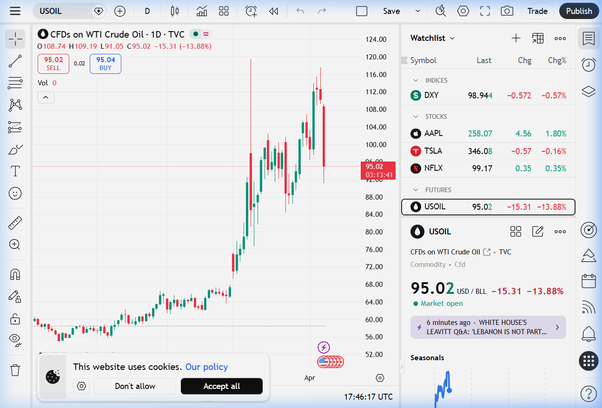
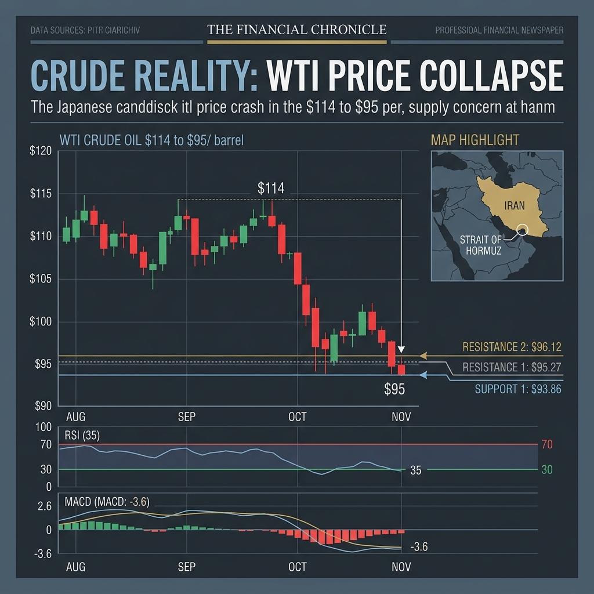

🛢️ PETROLIO WTI: IL CROLLO DEL -15,86% IN UNA SOLA SEDUTA
Analisi tecnica e fondamentale. Cosa dicono i grafici (e cosa non vi racconta la propaganda).
Disclaimer
Questo articolo è un'analisi indipendente basata su dati di mercato verificabili. Non costituisce consulenza finanziaria né invito all'investimento. I grafici sono catturati in tempo reale da piattaforme regolamentate (TradingView, Investing.com). I numeri parlano — noi li leggiamo per voi.
📊 Il Quadro Generale: Cosa È Successo Oggi
Oggi, 8 aprile 2026, il petrolio WTI (West Texas Intermediate) ha subito uno dei crolli più violenti dell'ultimo triennio: dai massimi intraday di $109,19 fino a toccare un minimo di giornata di $91,05, per poi assestarsi intorno ai $95,02 al momento della stesura.
La variazione giornaliera è stata di -15,31 dollari al barile, pari a un -13,88% in una singola seduta.
Ma cosa ha causato un movimento così brutale? E soprattutto: cosa ci dicono davvero i grafici?
🕯️ Il Grafico a Candele: La Verità Nuda e Cruda
Partiamo dal grafico reale, catturato direttamente da TradingView questo pomeriggio:

Cosa vediamo nel grafico?
Il grafico a candele giapponesi (timeframe giornaliero, 1D) racconta una storia inequivocabile:
- La salita parossistica: Il WTI è passato da circa $60-68 a un picco di $114 i primi di aprile. Un'impennata del +70% in poche settimane, alimentata dalla paura dello Stretto di Hormuz.
- La candela di oggi: Una candela ribassista massiccia (body rosso esteso). Apertura a $108,74, massimo a $109,19, e minimo a $91,05. In gergo tecnico, questa è una "Bearish Marubozu" — segnale di fortissima pressione venditrice e liquidazione forzata di posizioni long in panico.

📈 L'Analisi Tecnica: I Numeri Non Hanno Opinione Politica
Meno chiacchiere e più razionalità. Ecco i dati tecnici catturati da Investing.com:

| Indicatore | Valore | Segnale |
|---|---|---|
| RSI (14) | 35,26 | ⚠️ Vicino all'ipervenduto |
| MACD (12,26) | -3,60 | 🔴 Vendita |
| Sintesi Media | - | SELL (Buy: 4 — Sell: 8) |
Il prezzo si muove in una fascia vitale tra il supporto di $93,86 e la resistenza di $95,27. Il prezzo attuale è "scivolato" sotto quasi tutte le principali medie mobili degli ultimi mesi (MA20, MA50, MA100).
🌍 L'Analisi Fondamentale: Iran, Hormuz e la Grande Paura

Nelle ultime settimane, i mercati del petrolio sono stati ostaggio della paura legata al conflitto Iran-Stati Uniti. Il timore? Il blocco di Hormuz. Da quello snodo marittimo critico transita gran parte del petrolio mondiale. La proposta in 10 punti di Donald Trump per un accordo, mediata e spinta con la tregua di due settimane appena firmata, ha in realtà disinnescato l'arma della speculazione su questo fronte. Il "premio geopolitico" che pagavamo sul prezzo si p sgonfiato in poche ore, facendo precipitare le quotazioni di 20$ in pochi giorni.

🛑 DEBUNKING ROOM: Smontiamo la Propaganda da Bar (e da Instagram)
Di recente si è accesa, specialmente sui nostri social, una dura discussione nei commenti innescata da una finta deduzione, comune ma ignorante dal punto di vista economico: "Il petrolio oggi è crollato, eppure la benzina al distributore qui in Italia è ancora altissima! Ci rubano i soldi!"
Fermiamoci un secondo ad esaminare questa logica errata tramite il nostro fact-checking, recuperando i punti sollevati proprio nei nostri accesi scambi.
❌ FAKE NEWS: "Il petrolio crolla oggi, la benzina deve scendere oggi."
Falso. Esiste un "market lag" ineliminabile nella filiera.
Molti ignorano un fatto fondamentale. Il prezzo che vedete crollare oggi in Borsa è il prezzo dei futures sul greggio WTI o Brent. Il petrolio comprato oggi non viene raffinato in un'ora e spruzzato nelle cisterne dei benzinai nello stesso pomeriggio.
Le stazioni di servizio e i centri logistici italiani oggi stanno ancora esaurendo le scorte comprate, stoccate e raffinate nei giorni – e settimane – passati, ovvero quando il prezzo era a 110$. Gli aggiustamenti reali alla pompa, fisiologicamente, non si materializzano prima di qualche giorno (solitamente inizieremo a vederli dal fine settimana).
❌ FAKE NEWS: "È colpa del Governo e dei benzinai che se ne approfittano."
Falso. Osservate la struttura dei costi fissi: Accise e Margini di Raffinazione.
Il costo del barile incide in minima parte sul prezzo finale per due motivi tecnici inattaccabili:
- Il peso ereditato di Accise e IVA: In Italia, oltre il 50-60% del prezzo della benzina è composto da tasso fisso e tasse governative introdotte nei decenni passati. Il Governo Meloni sta operando un complesso e faticoso piano di riduzione e razionalizzazione strutturale, ma azzerare improvvisamente questo fardello - necessario oggi per sanare i disastri e i debiti delle politiche governative passate e di sinistra - creerebbe buchi di bilancio enormi. La realtà è matematica: l'impatto percentuale di un calo estemporaneo in Borsa del greggio sul prezzo finale non può che essere ridotto.
- Il Crack Spread (Margini di raffinazione): Il mercato dei prezzi della benzina raffinata è scollegato dal mero barile crudo. Bisogna guardare ai costi di distillazione del diesel e della benzina, un mercato che viaggia a ritmi e fluttuazioni diverse dal semplice greggio.
✅ FATTO CERTIFICATO: Anche l'Euro conta.
Il petrolio si compra rigorosamente in Dollari USA (Petro-dollari). Qualora il prezzo del petrolio in Borsa scenda, ma parallelamente l'Euro si deprezzi rispetto al Dollaro, i cittadini europei vedranno i benefici del calo parzialmente "mangiati" dal cambio negativo della valuta. L'illusione di essere truffati al distributore deriva molto spesso dalla **non comprensione delle dinamiche valutarie mondiali**.
🇮🇹 L'Azione Pragmatica del Governo: Le Alternative ad Hormuz
Proprio per slegare l'Italia dal rischio estremo legato a specifici colli di bottiglia e pressioni estere, Giorgia Meloni si è recentemente mossa in prima persona con missioni chiave nei Paesi del Golfo (Arabia Saudita, Emirati Arabi, Qatar). Una diplomazia seria, volta a garantire vie di approvvigionamento solide e fonti energetiche diversificate per il lungo termine.
In sinergia con la robusta visione del Piano Mattei e gli strategici accordi rinnovati per l'acquisizione del gas algerino, l'attuale governo di Centro-Destra sta dimostrando che le crisi globali non si affrontano piangendosi addosso, ma creando reti di stabilità e sicurezza energetica a tutela della nazione e della nostra industria.
📝 Conclusione
Viviamo un'epoca in cui la finanza e l'economia si sono trasformati in un campo di battaglia della narrazione: c'è chi urla al disastro per fare propaganda e chi minimizza tutto mentendo. Noi crediamo solo nei dati veri e nelle meccaniche dell'economia reale. Da noi non troverete gli urlatori qualunquisti.
Continuate a seguirci per ragionare con la vostra testa.